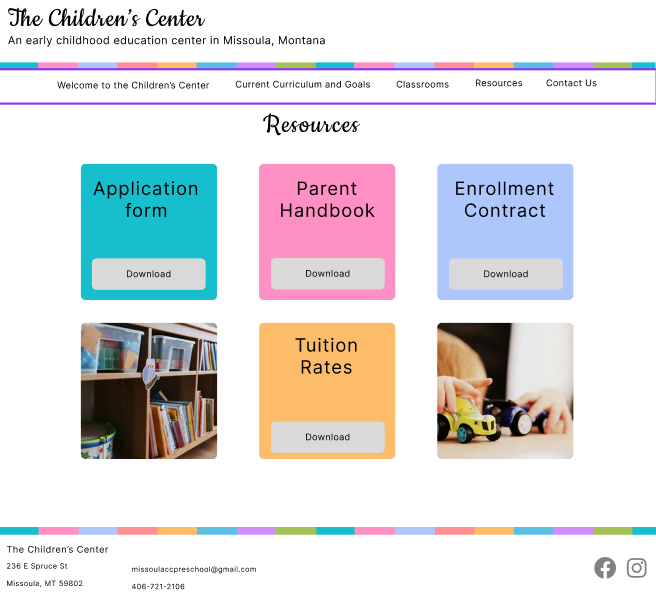
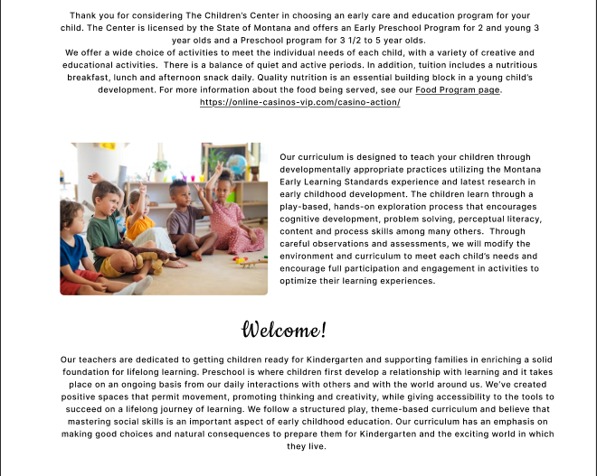

The Childrens Center
Mission
When I began this project I wanted to enhance my re-designing skills. The goal was to keep all the information from the original website, but use color and layout to highlight the essential information. This was made with parents in mind, so keeping the information organized and easy to find was important.
Tools and Skills
Key Features
Children Centered
The website design was created with children in mind. The images and colors reflect a playful and fun environment.
Use of Color
The design was kept clean and modern, with pops of color used to highlight information, break up the sections, and add an inviting feel.
Mobile Friendly
A mobile design was created so users could easily naviigate the website on the go. A focus was placed on breaking up the text and keeping the playful attitude of the website.
Re-Design
The goal of this project was to re-design an existing website, focusing on a clean, modern approach while keeping the original colors and mood. I wanted to add more images to break up the extensive text, utilize more white-space to create a minimal look, and add rounded edges to contribute to the cohesiveness of the overall site.

Process
Take notes on pitfalls of the current website and brainstorm new ideas
Choose the final layout and begin adding images, text, and polishing touches
Create a few mock-ups for each page (web only)
Translate the web version into a mobile friendly mock-up

Challenges
There were a couple challenges when designing this website, one of which was including all the relevant text, but breaking it up to be aesthetically pleasing to look at. The homepage had several paragraphs of text that were overwhelming to look at. I knew that in my updated version I wanted to have the text be less overpowering, but still wanted all the information on the home page. I was able to add some images to break up the block of text, creating a cohesive page with the relevant information.
Learned Along the Way
This project deepened my understanding of 3D math, coordinate systems, and WebGL-based rendering through Three.js. I also learned how to work with public scientific APIs and parse large datasets efficiently in the browser. Beyond the technical side, designing for a dark, data-heavy interface pushed me to think more carefully about contrast, hierarchy, and how to guide a user's eye without cluttering the screen.
Because this was just a re-design of an existing site I did not create an actual website. The goal of this project was to purely focus on the design and not worry about the implementation. You can explore my Figma board above.